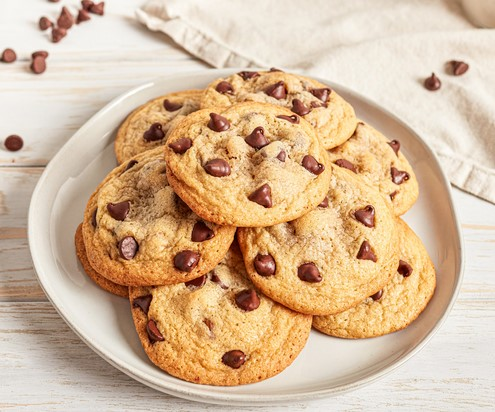

Chocolate Chip Cookies Recipe

Photo of Delicious Chocolate Chip Cookies
These chocolate chip cookies are a classic treat that everyone loves. Get ready to indulge!
Ingredients
- Butter: 1 cup of unsalted butter, softened
- Granulated sugar: 1 cup
- Brown sugar: 1 cup, packed
- Eggs: 2 large eggs
- All-purpose flour: 2 and 1/4 cups
- Baking soda: 1 teaspoon
- Salt: 1/2 teaspoon
- Semi-sweet chocolate chips: 2 cups
- Vanilla extract: 1 teaspoon
Steps
- In a large bowl, cream together the softened butter, granulated sugar, and brown sugar until smooth.
- Add the eggs one at a time, beating well after each addition.
- In a separate bowl, combine the all-purpose flour, baking soda, and salt. Gradually add this mixture to the butter mixture and mix until well combined.
- Stir in the chocolate chips and vanilla extract.
- Drop rounded tablespoons of cookie dough onto ungreased baking sheets.
- Bake in a preheated oven at 375°F (190°C) for 9-11 minutes, or until golden brown around the edges.
- Allow the cookies to cool on the baking sheets for a few minutes, then transfer them to wire racks to cool completely.
- Enjoy your homemade chocolate chip cookies!